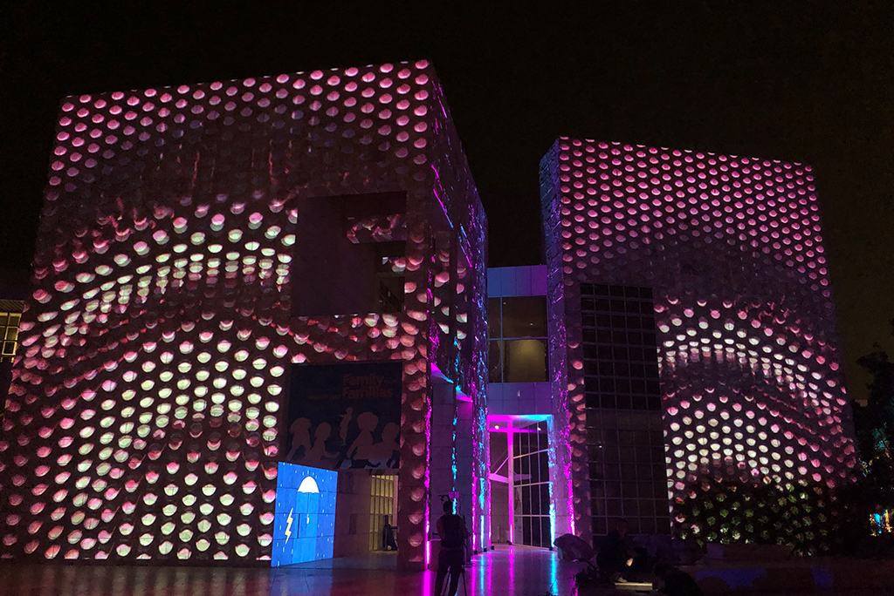
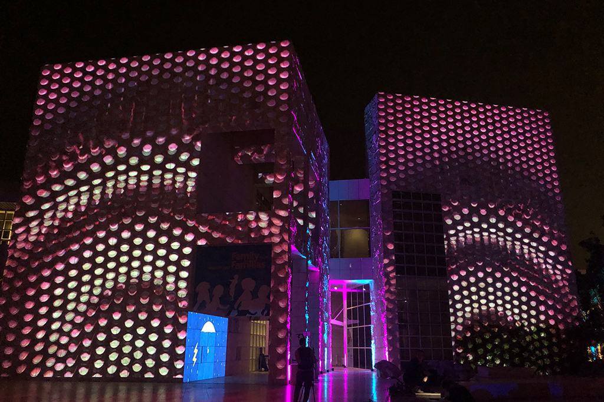

Getty UnShuttered II was an Immersive Projection Exhibit Directed and Curated By Mike Patterson and Candace Reckinger with over 3000 attendees. We used projection mapping in more than 10 buildings and rock fountain at The Getty Unshuttered, featuring young photographers.
I designed and deployed the projection mapping and file system playing a fully in Sync event across five main buildings. I created as well dynamic and colorful 3D animations that were projected on the rocks and buildings of the Getty center.
The Main objective of the Getty Unshuttered event is to highlight the young photographer's works. These can be find in a gallery inside the Getty Center with an exhibit that was open to the public for more than 6 months. In close collaboration with Eric Bertelloti, Head of Interpretive Content and Jill Moniz, curator of the exhibit, I built and deployed the projection mapping system used in the gallery.
 
